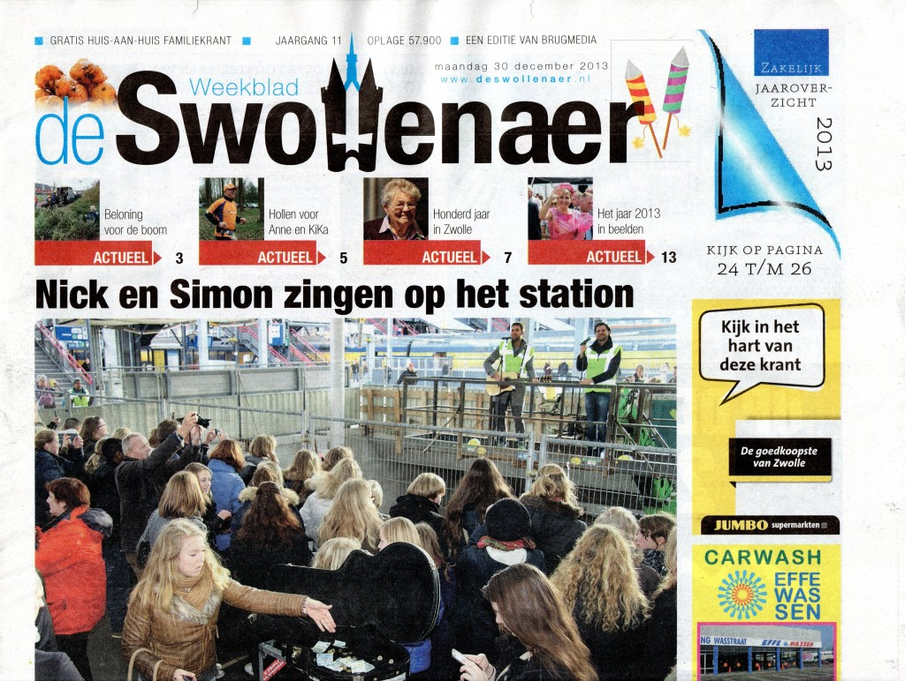
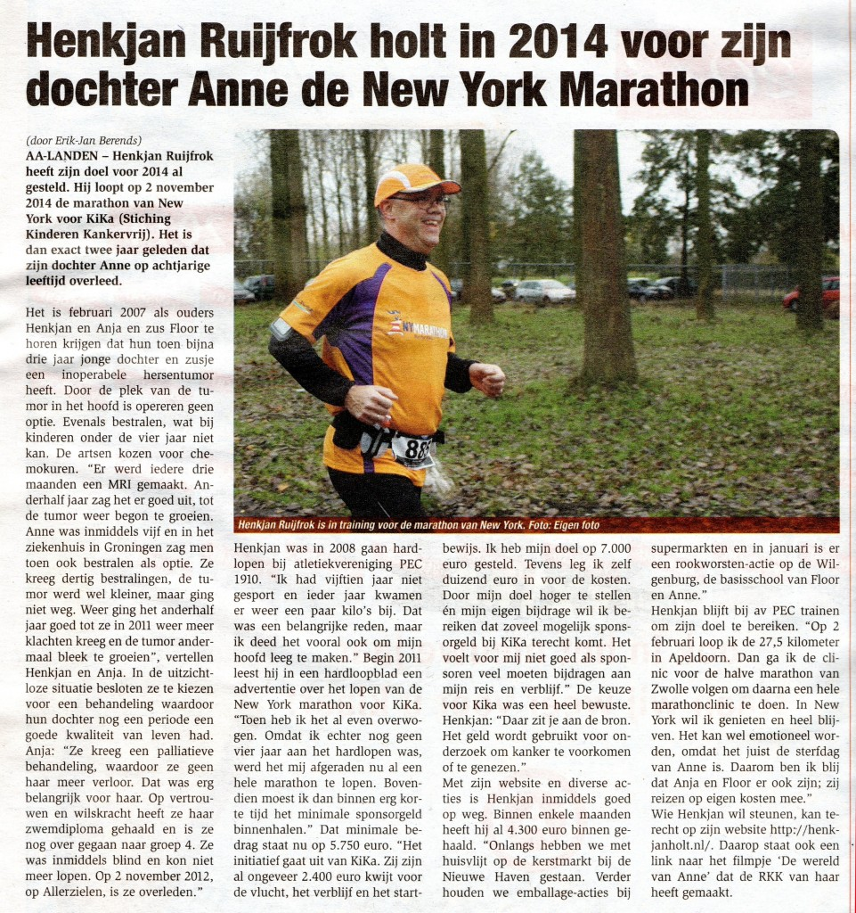
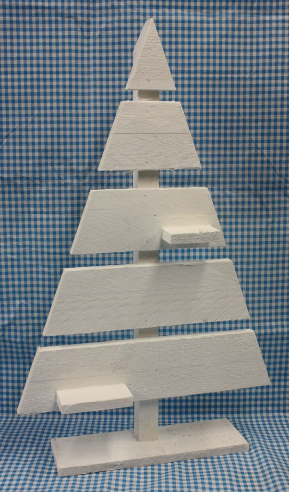
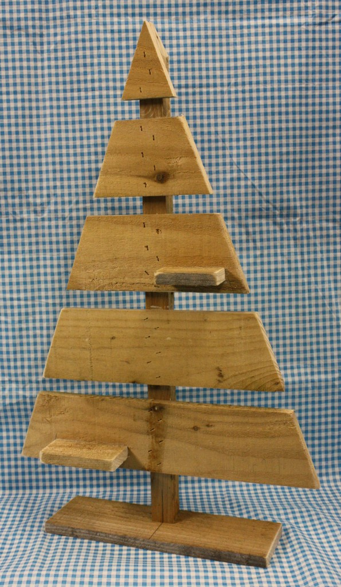
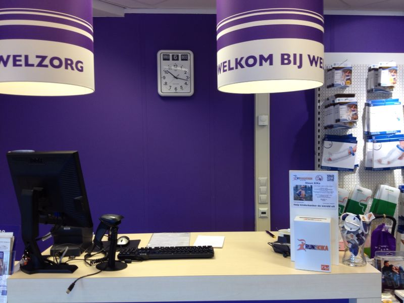
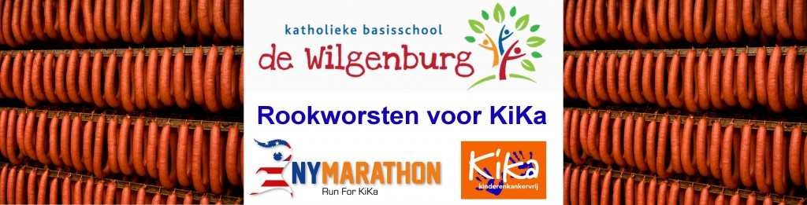

20131231
Dank zij al mijn sponsoren sta ik aan het eind van 2013 op het geweldige bedrag van €5250,70 !!! Dat is 75% van mijn persoonlijke sponsordoel ! SUPERBEDANKT !!! en tot volgend jaar !!!
20131230
Artikel De Swollenaer.
Op de voorpagina van De Swollenaer een kleine foto van mij met de tekst “Hollen voor Anne en KiKa”.
In het midden van pagina 5 een prachtig artikel geschreven door Erik-Jan Berends.
Het artikel in De Swollenaer is ook hier te lezen.
20131220
Eind van een drukke maar sponsortechnisch zéééér succesvolle week !!!
Zaterdag 14 december 2013: Kerstmarkt De Nieuwe Haven – Opbrengst voor KiKa € 405 Maandag 16 december 2013 (Henkjan ziek): Verkoop HuisVlijtArtikelen aan collega´s en deelnemers De Nieuwe Haven – Opbrengst voor KiKa € 110 Dinsdag 17 december 2013 (Henkjan ziek): Betaling geleverde PindaKaasHuisjes – Opbrengst voor KiKa € 80 Woensdag 18 december 2013: Betaling geleverde PindaKaasHuisjes – Opbrengst voor KiKa € 20 Donderdag 19 december: Statiegeld AH Flora Deventer – Opbrengst voor KiKa € 95,15 Kerstborrel Tauw bv (Deventer) – verkoop huisvlijtartikelen – Opbrengst voor KiKa € 113,80 – inhoud collectezuil – Opbrengst voor KiKa € 137,15 Vrijdag 20 december: 2e sponsorbedrijf zelf 2e bijdrage gedaan voor de reis.
Op 13 december stond mijn sponsorteller op € 2363,05 Inclusief diverse sponsoren en de bovengenoemde acties staat mijn sponsorteller aan het eind van vrijdag 20 december op € 4234,15 !!! In een week tijd dus € 1871,10 gestegen !
Hierbij Hartelijk Dank aan – al mijn sponsoren, – alle kopers van HuisVlijtArtikelen, – iedereen die geld in mijn collectezuil en – statiegeldbonnen in mijn KiKa-zuil heeft gedaan.
Sportief een zéééér slechte week: vanwege ziekte
en acties helemaal NIET gelopen  . Hopelijk volgende week wel
in staat om te trainen.
. Hopelijk volgende week wel
in staat om te trainen.
20131215
Voor de kerstmarkt hebben we HuisVlijtArtikelen gemaakt en deze zijn niet allemaal verkocht. Hier vind je een overzicht van de HuisVlijtArtikelen met een foto, omschrijving, verkoopprijs, materiaalkosten en opbrengst voor de stichting Kinderen Kankervrij. Heb je belangstelling voor één of meerdere artikelen dan kun je die in overleg tegen betaling op komen halen.
20131212
Nieuwe HuisvlijtArtikelen zijn klaar voor de Kerstmarkt in De Nieuwe Haven van komende zaterdag.
 
{kind=link}
20131206
Sinds vandaag staat er een collectebus bij Welzorg aan de Willemsvaart in Zwolle. Gerrianne: Bedankt! 
20131206
In infobulletin nr. 15 van basisschool de Wilgenburg uit Zwolle staat de aankondiging van de actie 
20131205
Van Anne de Laet deze week een exemplaar van KRO Magazine nr.49 ontvangen, waarvoor onze hartelijke dank. Op pagina 29 staat een artikel over Wereldlichtjesdag met daarin een prachtig stuk over De wereld van Anne.
Terug naar Nieuws.
Terug naar Welkom.
Gisteren heeft Gerrianne tijdens de Twee Bruggenloop haar eerste 5 km wedstrijd gelopen !
!
Samen hebben we er 28 minuten en 47 seconden over gedaan (=10.42 km/uur gemiddeld), een uitstekende prestatie voor een 1e 5 km!
Ik heb het volgende rondje met 11.73 km/uur gemiddeld doorgeholt waardoor mijn eindtijd uitkwam op 54 minuten en 22 seconden.
Mede dankzij de vele trouwe supporters (waarvoor DANK !) een leuke sportieve ochtend.
Zie ook YouTube http://www.youtube.com/watch?v=oxGcx4w5GKY voor een filmpje. Bij 11:16 komen Gerrianne en ik in beeld en bij 12:08 gaan we over de streep. Bij 36:38 kom ik voor de 2e keer de baan op en ik finish bij 37:42.
Wat zien jullie huisvlijtartikelen er fantastisch uit!
Dank je !
Er komt nog meer, maar daar wordt (letterlijk) nog aan gewerkt…
Wat een prachtig resultaat:gefeliciteerd!
Dank je wel; resultaat mede dank zij jouw bijdrage en inspanningen !
Sponsorteller ondertussen (20140108) op € 5900,70 !
Groet Henkjan.